Về hình minh họaMọi hình trong trang này dùng dữ liệu giả (“Vùng trồng mẫu A”, “HTX Nông nghiệp Mẫu”, tên hộ và ảnh vệ tinh mô phỏng) để không lộ thông tin nông hộ thật.
1Tổng quan và quy trình làm việc
Công cụ chạy ngay trên trình duyệt, không cần cài đặt và không cần đăng nhập. Có 4 tab, làm lần lượt từ trái sang phải:
| Tab | Việc làm | Kết quả |
|---|---|---|
| 1. Vùng trồng | Nhập Excel hoặc bộ hồ sơ .zip, bổ sung thông tin tổ chức, nông hộ, lô đất | Danh sách hộ và lô đầy đủ |
| 2. Mùa vụ & quy trình | Đặt ngày bắt đầu vụ, giai đoạn, công việc, phân thuốc, sâu bệnh cho từng xã/phường | Lịch canh tác chuẩn cho cả vùng |
| 3. Xuất hồ sơ | Chọn vùng và vụ, chỉnh lịch từng lô, nhập vật tư và kết quả kiểm tra thực tế, điền phiếu Questionnaire, tải file | 6 file .docx (5 nhật ký + Questionnaire) |
| 4. Sao lưu & hướng dẫn | Tải tệp sao lưu .json, khôi phục trên máy khác | Dữ liệu an toàn khi đổi máy |
2Dữ liệu được lưu ở đâu
Khi mở bằng link GitHub, dữ liệu (kể cả ảnh) được lưu trong chính trình duyệt của máy đang dùng. Dòng trạng thái ở đầu trang cho biết đang lưu ở đâu.
- Đóng trình duyệt rồi mở lại vẫn còn dữ liệu.
- Máy khác, trình duyệt khác hoặc cửa sổ ẩn danh không thấy dữ liệu này.
- Xóa lịch sử hoặc “dữ liệu trang web” của trình duyệt sẽ mất dữ liệu.
3Nhập dữ liệu: Excel hoặc bộ hồ sơ .zip
Bước 0: lấy file từ hệ thống FarmBase (tài khoản quyền cộng tác viên)
Lấy bộ hồ sơ .zip (chi tiết nhất, có ảnh vệ tinh từng lô):
- Đăng nhập FarmBase bằng tài khoản cộng tác viên, mở vùng trồng cần làm hồ sơ.
- Chọn đúng vụ mùa ở góc trên bên phải.
- Vào tab Hồ sơ, ở ô “Bộ hồ sơ” chọn Hồ sơ vùng trồng NQ36.
- Bấm Xuất hồ sơ, chờ hệ thống tạo file, rồi bấm biểu tượng tải về để lưu file .zip.

Lấy file Excel danh sách vùng trồng:
- Ở trang vùng trồng, bấm nút … ở góc trên bên phải.
- Chọn Xuất file danh sách vùng trồng. Hộp “Mẫu nhập xuất” hiện ra với tên vùng trồng.
- Bấm Tải mẫu để tải file Excel về máy. Không bấm “Nhập mẫu” vì nút đó dùng để đưa dữ liệu ngược lên FarmBase.
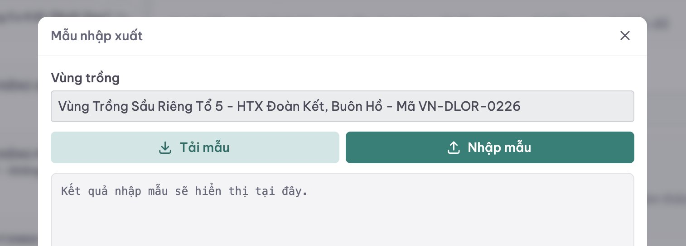
Bước 1: đưa file vào công cụ
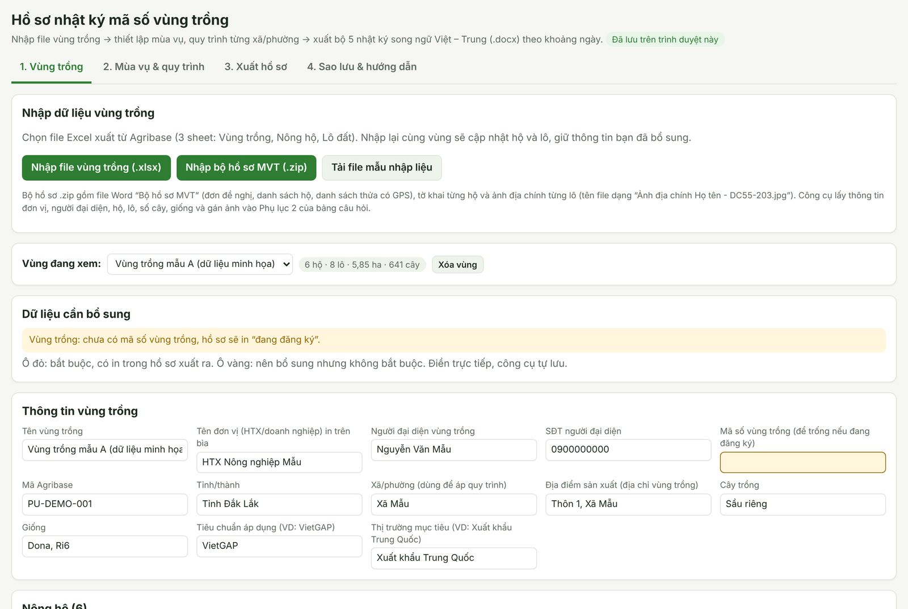
Cách A: file Excel vùng trồng
- Bấm Tải file Excel mẫu nếu chưa có file đúng cột. Mỗi dòng là một lô gồm mã lô, chủ hộ, CCCD, diện tích, số cây, giống, năm trồng, tọa độ, tờ/thửa, cây trồng xen, tỷ lệ xen.
- Bấm Nhập file Excel và chọn file. Công cụ tự nhóm lô theo hộ và theo xã/phường.
- Nhập lại file của cùng vùng thì phần đã điền tay (phiếu khảo sát, ảnh, link nhật ký điện tử) được giữ nguyên. Ảnh lô được ghép lại theo mã lô và tên chủ hộ.
Cách B: nguyên bộ hồ sơ MVT dạng .zip
Bấm Nhập bộ hồ sơ MVT (.zip) và chọn file nén có cấu trúc như bộ hồ sơ đã lập (ví dụ bộ Eakly). Công cụ đọc:
- File “Bộ hồ sơ MVT”: tên tổ chức, mã số thuế, người đại diện, điện thoại, email, địa chỉ, xã, tỉnh, cây trồng, giống, tiêu chuẩn VietGAP, thị trường, sản lượng; bảng GPS và số tờ/thửa (thành danh sách lô); bảng số cây, giống, năm trồng; bảng ngày sinh.
- Các file “Tờ khai”: ngày cấp và nơi cấp CCCD, địa chỉ hộ.
- Ảnh “Ảnh địa chính Tên - MÃ.jpg”: tự gắn vào Phụ lục 2 đúng lô theo tên chủ hộ và mã lô.
4Bổ sung thông tin vùng và lô
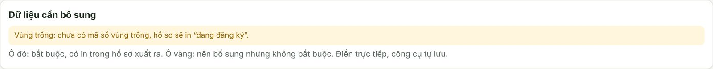
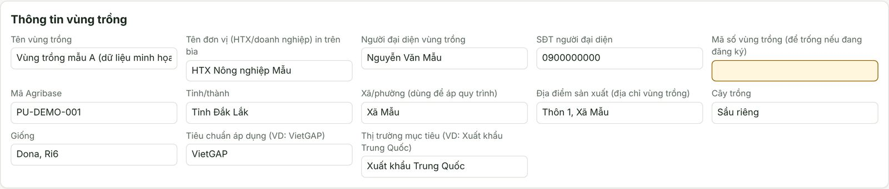
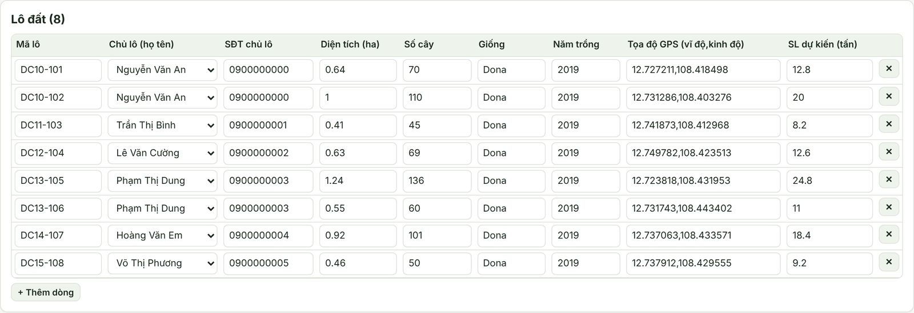
5Mùa vụ và quy trình canh tác
Mỗi xã/phường có quy trình riêng. Xã mới tự nhận quy trình sầu riêng mẫu, hoặc có thể sao chép quy trình từ xã khác.
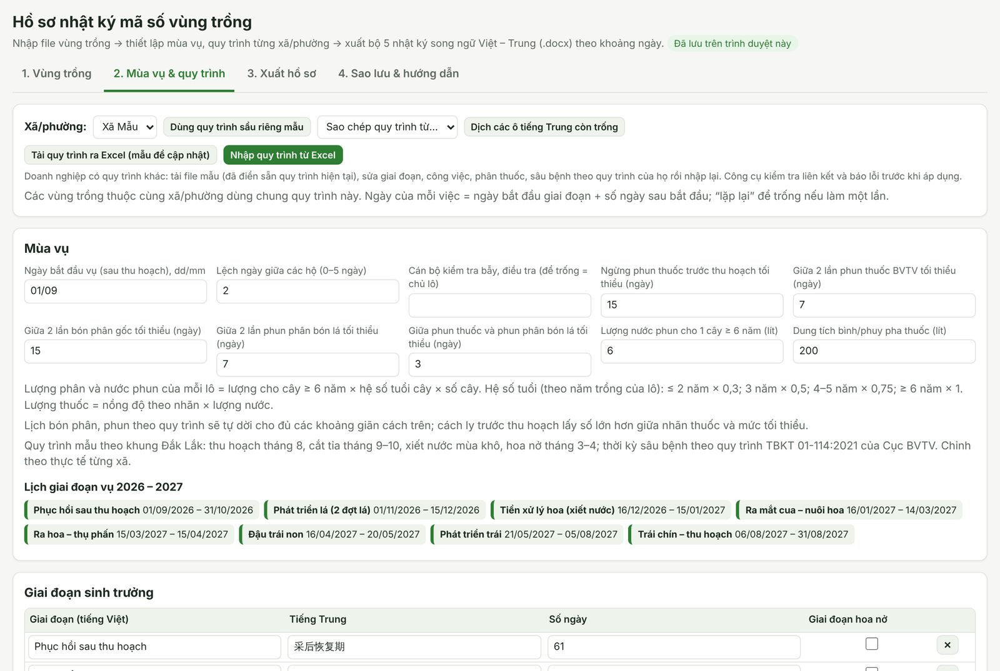
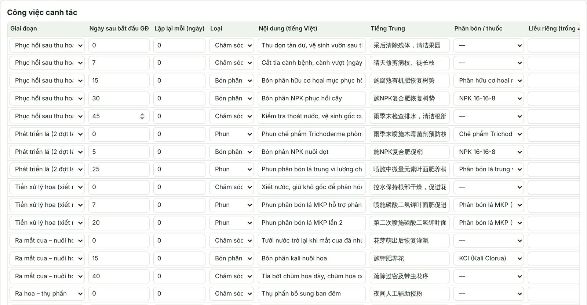
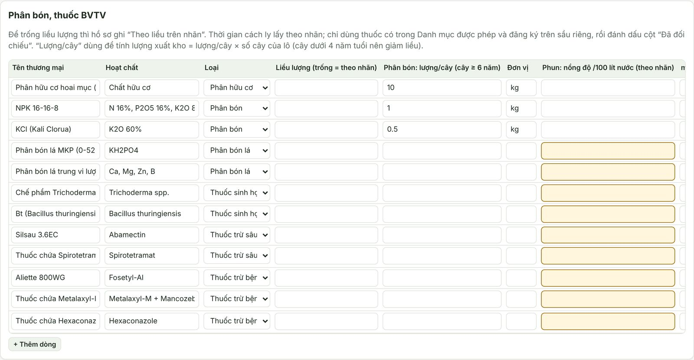
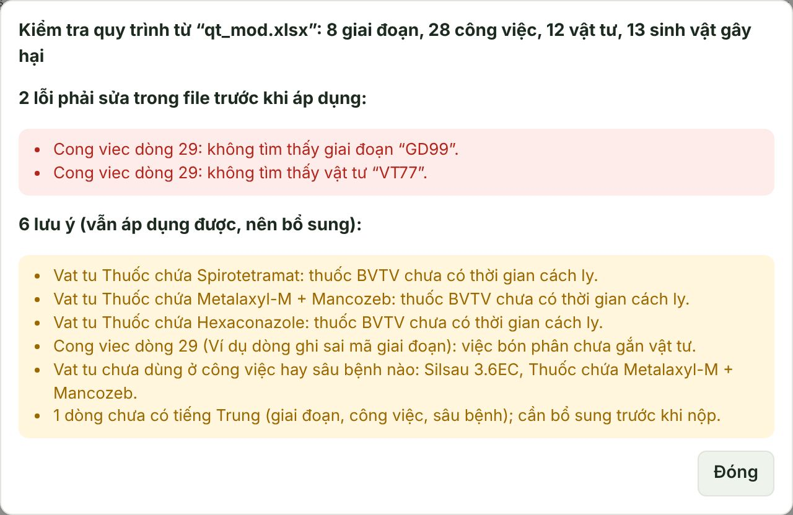
- Thêm dòng mới xong, bấm Dịch các ô tiếng Trung còn trống rồi đọc lại bản dịch.
- Phần “Sinh vật gây hại” gồm danh sách SVGH cần theo dõi, thuốc mặc định và diễn biến mẫu. Diễn biến mẫu chỉ là kế hoạch, không phải kết quả.
6Quy trình riêng của doanh nghiệp (mẫu Excel)
Dùng khi doanh nghiệp có giai đoạn, phân thuốc hoặc sâu bệnh khác quy trình mẫu.
- Ở tab 2, chọn xã/phường rồi bấm Tải quy trình ra Excel (mẫu để cập nhật). File có các sheet: Huong dan, Mua vu, Giai doan, Vat tu, Cong viec, Sau benh, Dien bien mau, Bay.
- Sửa trong Excel. Mỗi giai đoạn, vật tư, sâu bệnh có mã (GDxx, VTxx, SBxx). Sheet Công việc và Sâu bệnh tham chiếu bằng mã hoặc đúng tên.
- Bấm Nhập quy trình từ Excel. Công cụ kiểm tra và hiện báo cáo: lỗi (mã không tồn tại, thiếu ngày, thiếu tên) thì không nhập; cảnh báo (thiếu tiếng Trung, thiếu PHI) vẫn nhập được.
- Kiểm tra lại tab 2, rồi sang tab 3 xuất hồ sơ theo quy trình mới.
7Xuất hồ sơ: chọn vụ, lịch từng lô, vật tư hộ
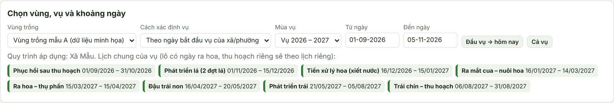
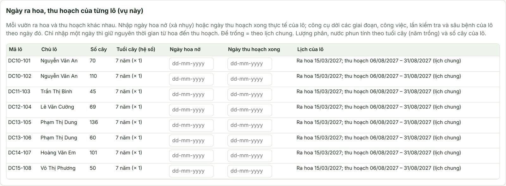
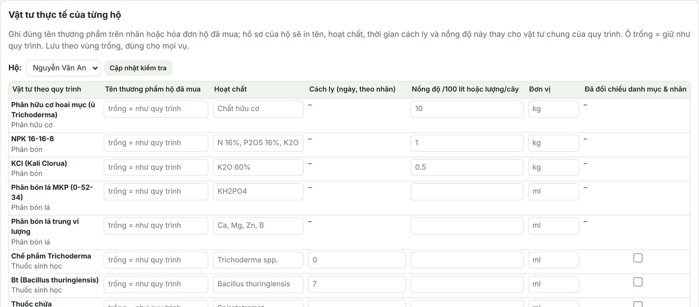
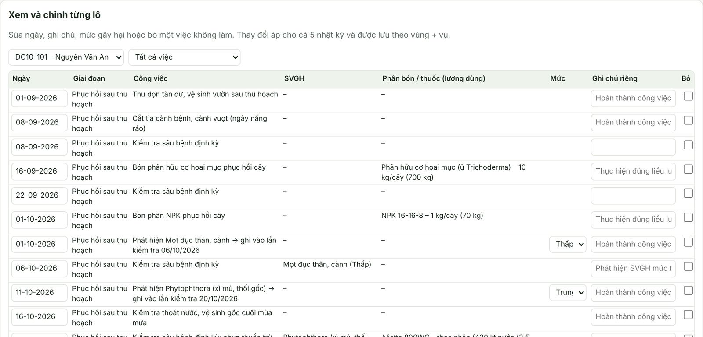
8Nhập kết quả kiểm tra sâu bệnh thực tế
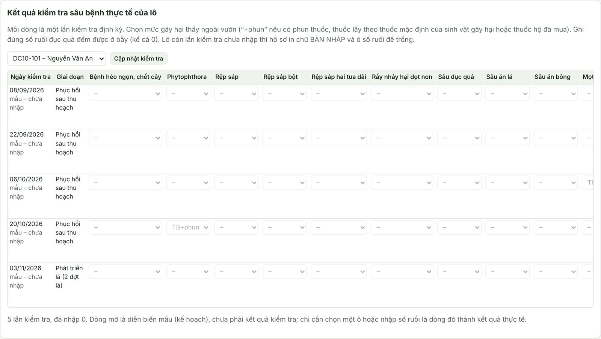
- Chọn lô, rồi với từng lần kiểm tra chọn mức gây hại thấy ngoài vườn cho từng SVGH (“+phun” nếu có phun thuốc).
- Ghi đúng số ruồi đục quả đếm được ở bẫy, kể cả khi bằng 0.
- Chỉ cần chọn một ô hoặc nhập số ruồi là dòng đó thành kết quả thực tế.
9Phiếu khảo sát Questionnaire (file 06)
Cấu trúc phiếu dựa theo 2 mẫu đã được duyệt (Hòa Bình, Chánh Thu): 7 mục, chữ ký, Phụ lục 1, Phụ lục 2.
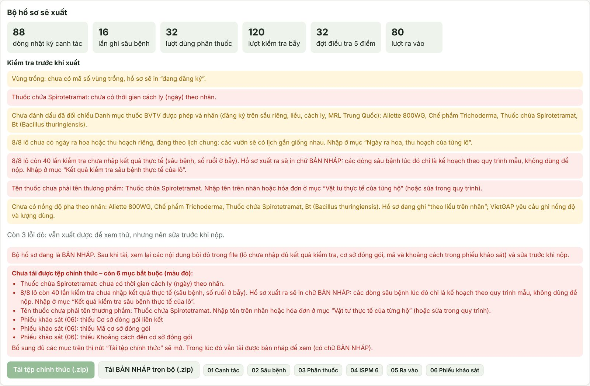
- Ngôn ngữ: mặc định Trung / Việt. Chọn Anh / Việt nếu cần nộp bản tiếng Anh.
- Danh sách vấn đề ở đầu thẻ: mục đỏ phải điền, mục vàng nên điền (thiếu nhóm ảnh, thiếu link nhật ký điện tử…).
- Các ô của phiếu: phần lớn tự điền từ dữ liệu vùng. Ba ô bắt buộc tự nhập là cơ sở đóng gói, mã cơ sở đóng gói và khoảng cách từ vùng trồng đến cơ sở đóng gói.
- Bấm Dịch để điền phần tiếng Trung (hoặc Anh) còn trống, rồi đọc lại.
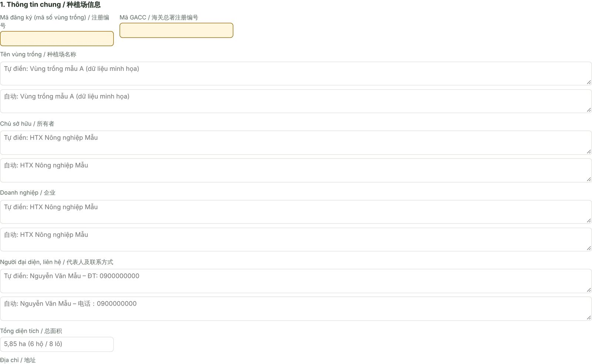
10Phụ lục 1 (ảnh, nhật ký điện tử) và Phụ lục 2 (ảnh vệ tinh)
Phụ lục 1: ảnh minh chứng và nhật ký điện tử
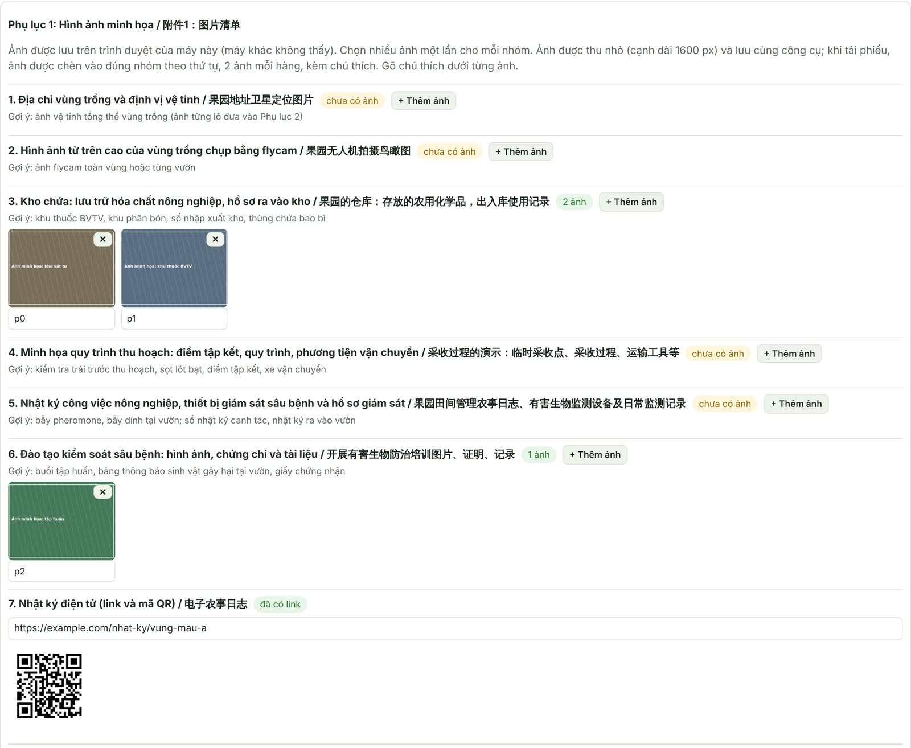
| Nhóm | Nên chụp |
|---|---|
| 1. Ảnh vệ tinh vùng trồng | Toàn vùng, có ranh giới |
| 2. Ảnh flycam / toàn cảnh | Vườn nhìn từ trên cao |
| 3. Kho vật tư | Kho phân thuốc có biển, kệ, sổ xuất nhập |
| 4. Thu hoạch | Hái, phân loại, dụng cụ chứa |
| 5. Giám sát sinh vật gây hại | Bẫy, điều tra 5 điểm, ghi chép |
| 6. Đào tạo | Buổi tập huấn, danh sách ký tên |
Ảnh được tự thu nhỏ (cạnh dài tối đa 1600 px) để file Word không quá nặng. Trong phiếu, ảnh xếp 2 ảnh một hàng và đánh số “Hình n.i / 图n.i”.
Mục 7 Nhật ký điện tử: dán link nhật ký điện tử (ví dụ trang truy xuất trên FarmBase). Phiếu sẽ có link bấm được và mã QR. Chưa có link thì phiếu hiện dòng đỏ nhắc bổ sung.
Phụ lục 2: ảnh vệ tinh từng lô có lô giới
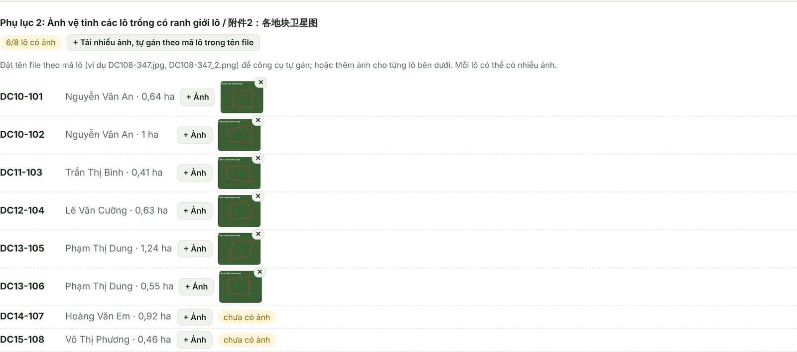
11Tải BẢN NHÁP và tải tệp chính thức
| Nút | Khi nào dùng | Kết quả |
|---|---|---|
| Tải BẢN NHÁP trọn bộ (.zip) | Bất cứ lúc nào, để rà soát, in cho chủ hộ xem | File có chữ BẢN NHÁP, chỗ thiếu tô đỏ |
| Tải tệp chính thức (.zip) | Chỉ bấm được khi hết mọi mục đỏ | File sạch, không có chữ BẢN NHÁP |
Khi nút chính thức còn mờ, ngay bên dưới có danh sách lý do, thường gồm: thông tin vùng hoặc hộ còn thiếu, lô còn lần kiểm tra chưa nhập kết quả, ba ô cơ sở đóng gói của phiếu khảo sát. Xử lý hết danh sách này thì nút sáng lên.
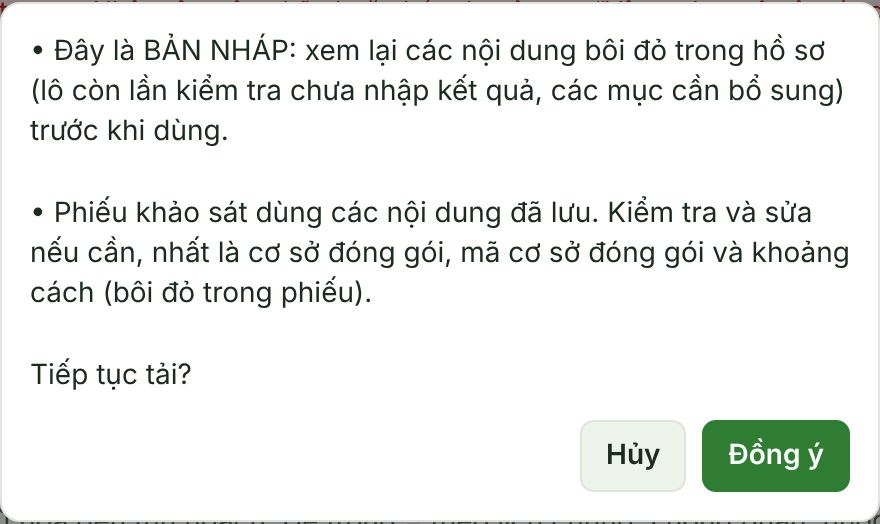
Có thể tải riêng từng file bằng các nút trong danh sách file nếu chỉ cần sửa một nhật ký.
12Xuất nhật ký canh tác sang FarmBase
Đưa nhật ký canh tác của công cụ (công việc, giai đoạn, SVGH, phân bón, thuốc, liều lượng, cách ly, mã truy xuất, lô đất) lên FarmBase bằng file theo đúng mẫu nhập NKCT của FarmBase.
- Trên FarmBase, xuất file nhật ký canh tác của đúng vùng và mùa vụ (file tên dạng NKCT_11-2025_10-2026_….xlsx).
- Trong công cụ, tab 3, chọn vùng, vụ và khoảng ngày. Kéo xuống thẻ “Xuất nhật ký canh tác sang FarmBase”, bấm Chọn file nhật ký từ FarmBase (NKCT .xlsx). Công cụ báo tên vùng, mùa vụ, số dòng đang có và cảnh báo đỏ nếu file là của vùng khác hoặc ngoài mùa vụ.
- Chọn Cách ghép. Mặc định là giữ các dòng đang có, thêm dòng mới (dòng trùng nông dân, ngày, công việc, phân thuốc sẽ bị bỏ).
- Bấm Tải file nhập nhật ký vào FarmBase (.xlsx), đọc bảng tóm tắt rồi bấm Đồng ý.
- Mở file kiểm tra, sau đó nhập lên FarmBase. Lần đầu nên thử với ít dòng.
| Cột FarmBase | Lấy từ công cụ |
|---|---|
| ID | Để trống cho dòng mới; dòng đang có giữ nguyên ID |
| Nông dân, Số điện thoại, Lô đất | Theo lô; tên và SĐT ưu tiên theo sheet Lô đất của FarmBase (khớp mã lô) |
| Ngày, Giai đoạn, Công việc | Lịch quy trình đã chỉnh từng lô (dd-mm-yyyy) |
| SVGH, Biện pháp | Kết quả kiểm tra thực tế đã nhập (mức gây hại, số ruồi/bẫy); với việc phun thuốc là đối tượng phòng trừ |
| Loại, Tên, Hoạt chất, Liều lượng, Cách ly, Mã truy xuất | Mỗi phân thuốc một dòng. Loại PESTICIDE / FERTILIZER / GROWTH_REGULATOR / OTHER; mã truy xuất lấy theo danh mục FarmBase, nếu chưa có thì tự xếp (31.01–31.05, 3808.91–3808.99) |
13Các file xuất ra và trang mẫu
Năm nhật ký khớp nhau vì cùng lấy từ một gốc. Nhật ký canh tác là gốc, mỗi công việc, lần kiểm tra bẫy, đợt điều tra, lần phát hiện SVGH là một dòng. Các nhật ký còn lại lọc từ đó, nên ngày, lô, người và vật tư luôn trùng nhau.
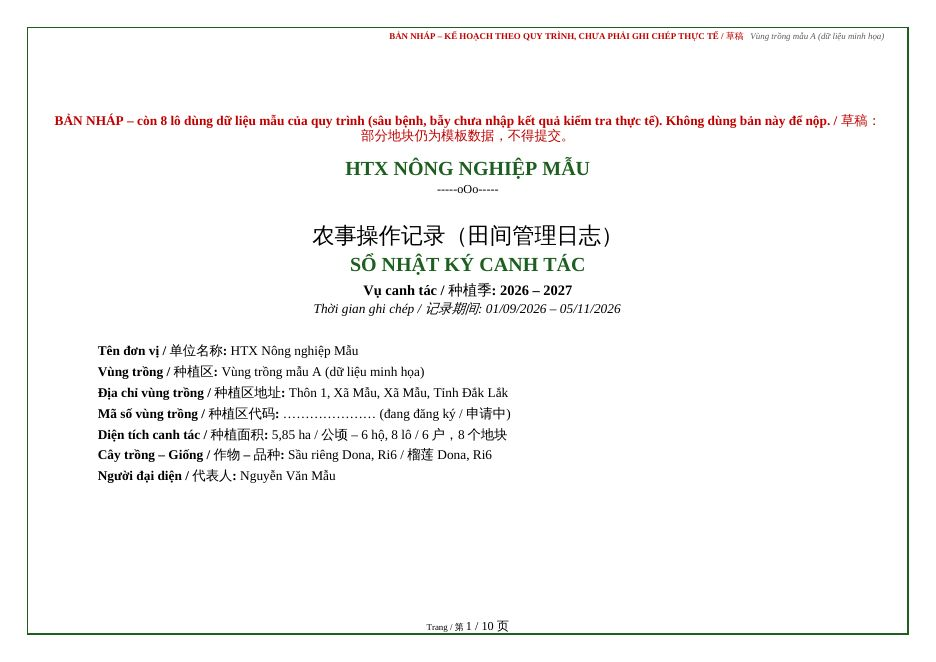
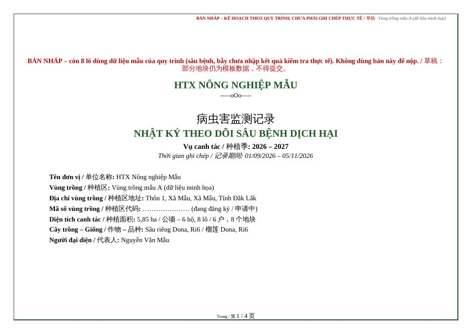
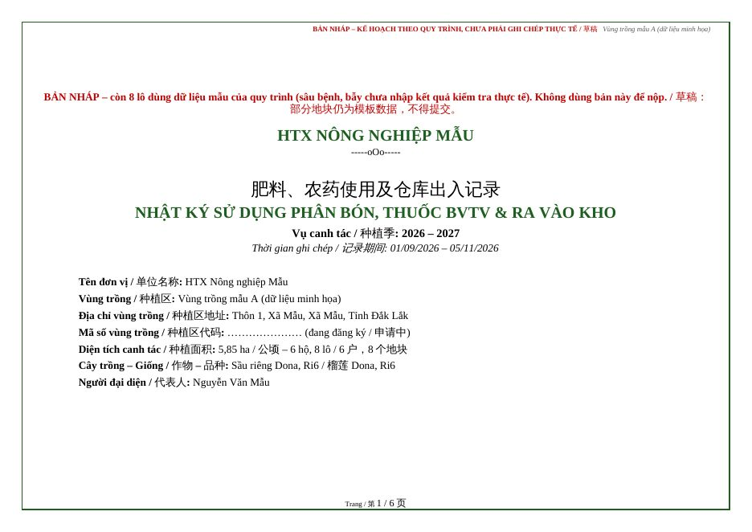
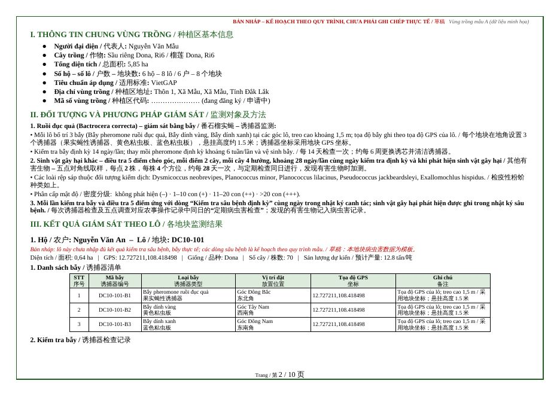
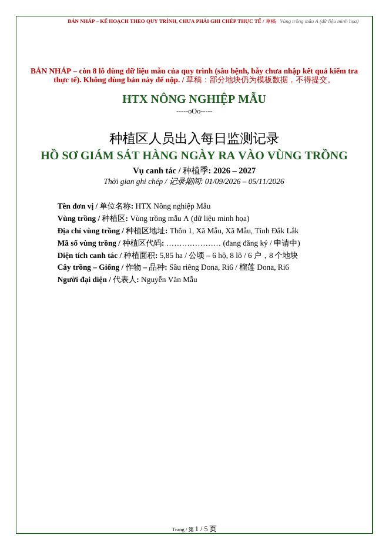
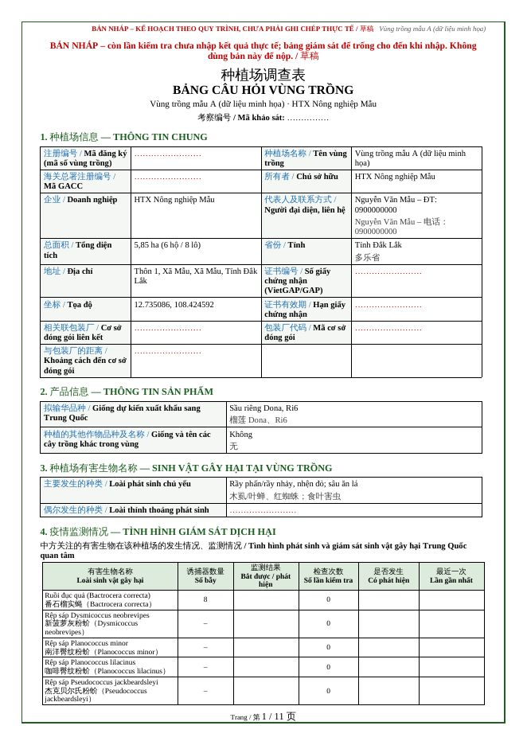
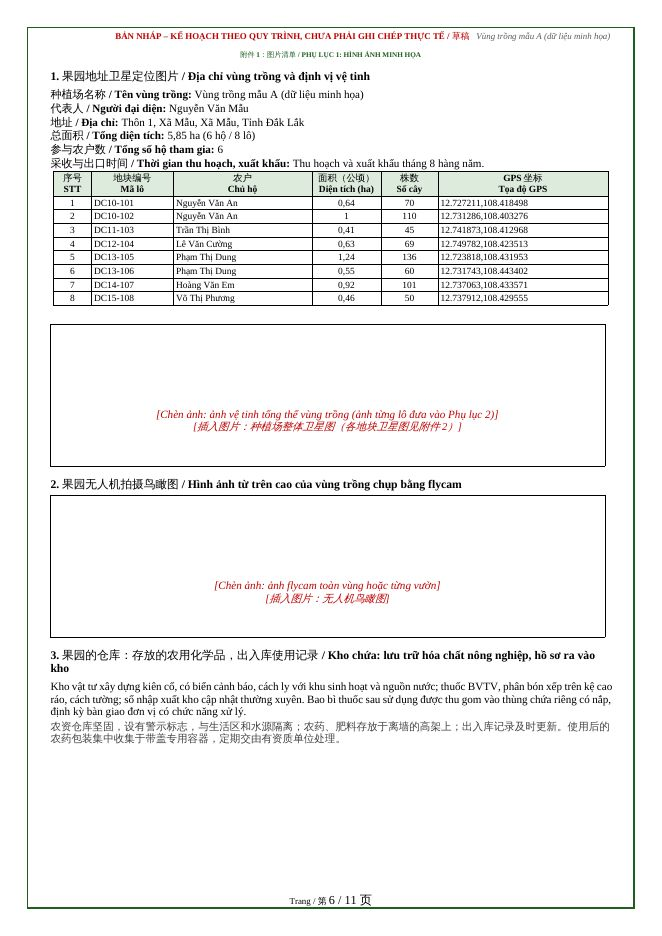
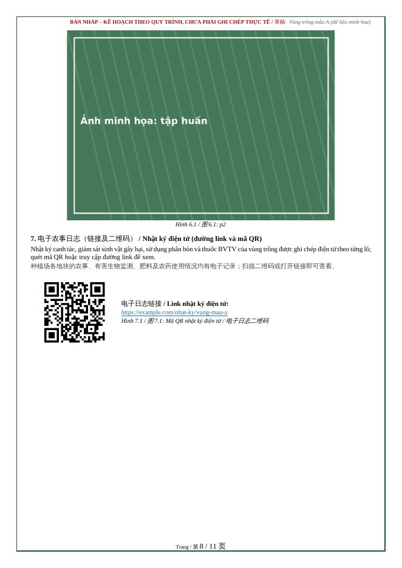
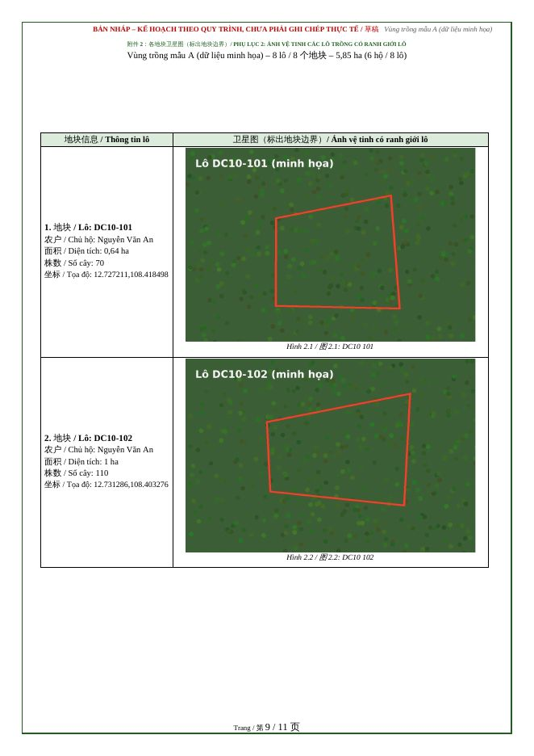
Định dạng chung: font Times New Roman, chỉ ghi ngày (không ghi giờ), song ngữ Việt – Trung.
14Sao lưu và chuyển máy
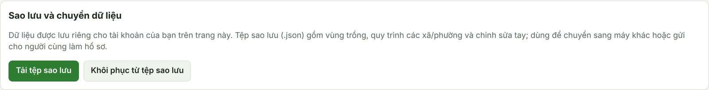
- Máy cũ: bấm Tải tệp sao lưu.
- Máy mới: mở công cụ, bấm Khôi phục từ tệp sao lưu, chọn tệp .json. Dữ liệu trùng sẽ bị ghi đè.
- Ảnh không có trong tệp .json. Trên máy mới, nhập lại bộ .zip hoặc tải lại ảnh (ảnh lô đặt tên theo mã lô để tải hàng loạt).